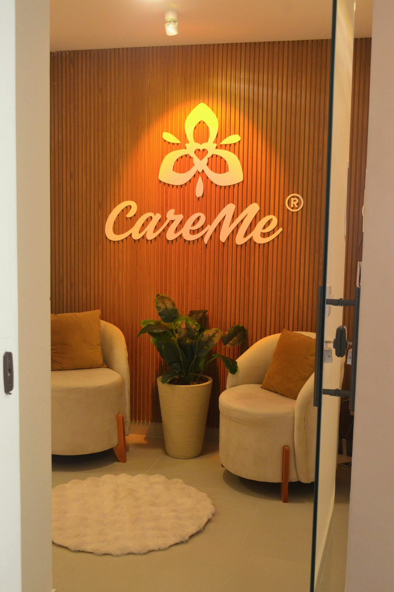
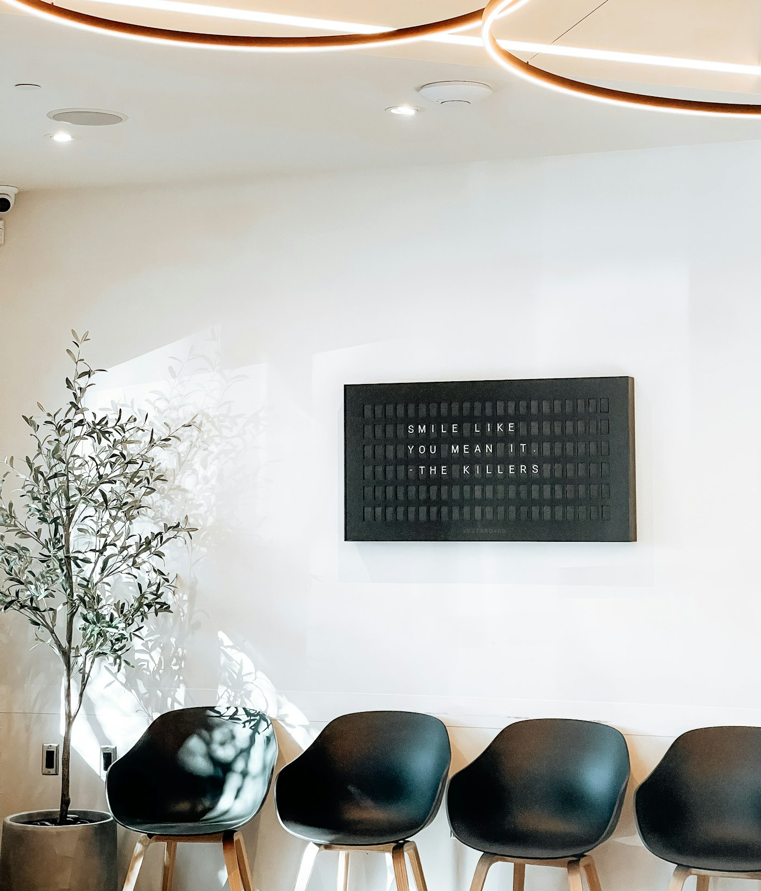

Linguagem infantil
Avaliação e acompanhamento do desenvolvimento da fala e da compreensão na infância, com orientação à família e, quando autorizado, à escola.
CRFa 6-14872/MG
Fonoaudiologia · Santa Luzia/MG
Registro profissional: CRFa 6-14872/MG
Consultório na região central de Santa Luzia, para crianças, adultos e idosos. Atendimento individual, com horário marcado e avaliação antes de qualquer plano de acompanhamento.
Av. Brasília, 1240 — sala 4, São Benedito. Segunda a quinta, das 08h às 19h30; sexta e sábado, pela manhã.
Consultório próprio, com sala silenciosa e acesso sem escadas.
Como funciona
É a dúvida que mais aparece no WhatsApp, então fica explicada aqui, passo a passo.
Você manda uma mensagem no WhatsApp contando o motivo da procura. Eu respondo com os horários livres e digo o que convém levar: encaminhamento, exames ou relatório da escola, se houver.
A primeira consulta leva cerca de 50 minutos: conversa sobre o histórico e testes específicos para a queixa. Quando o paciente é criança, o responsável fica na sala.
Explico, por escrito e em palavras simples, o que foi observado na avaliação e proponho a frequência das sessões. Você decide com calma, sem precisar fechar nada no mesmo dia.
Sessões individuais em horário fixo, com orientação de exercícios para casa e reavaliação periódica. Relatório para a escola ou para o médico quando solicitado.
Áreas de atuação
Avaliação e acompanhamento do desenvolvimento da fala e da compreensão na infância, com orientação à família e, quando autorizado, à escola.
Atendimento de trocas e distorções nos sons da fala, em sessões individuais com exercícios escolhidos a partir da avaliação.
Avaliação de respiração, mastigação, sucção e postura de língua e lábios, inclusive em acompanhamento conjunto com dentista ou ortodontista.
Avaliação vocal e exercícios para quem usa a voz no trabalho — professores, locutores, cantores — e para queixas de rouquidão, sempre com avaliação médica associada.
Orientação e acompanhamento de quem usa aparelho auditivo, com treino auditivo e conversa com a família sobre comunicação no dia a dia.
Avaliação da forma de engolir e condutas para alimentação segura, em quadros neurológicos ou após internação, em conjunto com a equipe de saúde que acompanha o caso.
Cada caso é avaliado individualmente: a conduta, o número de sessões e o tempo de acompanhamento são definidos em consulta, nunca pela internet. Os valores são informados no agendamento.
Sobre mim
Sou fonoaudióloga formada em 2013 e atendo em consultório próprio em Santa Luzia, com registro ativo no CRFa 6ª Região. O trabalho começa sempre pela avaliação: entender o histórico, ouvir a família ou o próprio paciente e explicar, em palavras simples, o que foi observado.
Atendo crianças, adultos e idosos, em sessões individuais com horário marcado. Quando o acompanhamento envolve escola, médico ou outro profissional, emito relatório por escrito, com autorização do paciente ou do responsável.
CRFa 6-14872/MG
Fonoaudiologia é profissão regulamentada. O registro acima pode ser consultado no Conselho Regional de Fonoaudiologia da 6ª Região.
Convênios e pagamento
Para pacientes acamados ou com dificuldade de locomoção, a sessão pode ser feita em casa. Os bairros atendidos e o deslocamento são combinados no agendamento.
Atendimento particular com recibo e relatório para pedido de reembolso ao plano de saúde. Os convênios credenciados são confirmados no agendamento, porque a lista muda.
Sessões no início da manhã, no horário do almoço e até 19h30, para quem trabalha ou estuda. Pagamento em Pix, dinheiro ou cartão de débito e crédito.
O consultório


Horários
O atendimento é sempre com horário marcado, para que não haja espera na recepção.
Como chegar
Av. Brasília, 1240 — sala 4, São Benedito, Santa Luzia/MG Abrir no mapa